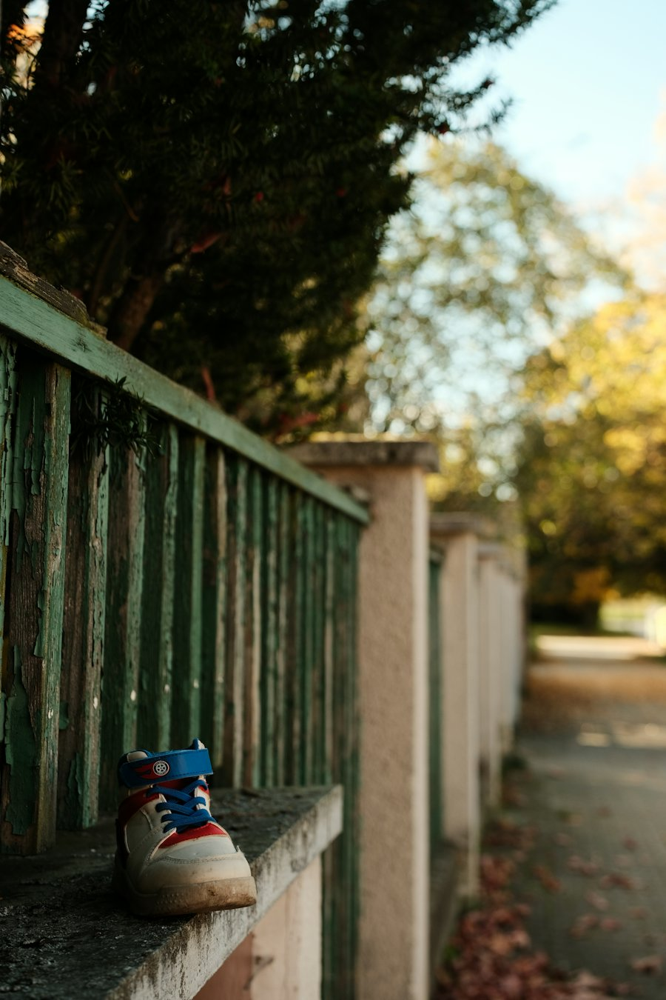

Du 18 au 38
Les premiers pas, puis tous les suivants.
Chausseur spécialiste de l'enfant depuis plus de 15 ans, place de la République. Multimarques, conseil sur mesure, et un coin bébé.
Les marques
Des marques choisies pour leurs pieds
- GBB
- Babybotte
- Shoopom
- Little Mary
- Pataugas
- Converse
- Stones and Bones
- Romagnoli
- Chaussons Bellamy
- Robeez
- New Balance
Le conseil
On mesure, on essaie, on prend le temps
Un pied d'enfant grandit vite et ne se plaint pas toujours. En boutique, chaque essayage commence par la mesure, puis on compare plusieurs modèles avant de choisir.
- Mesure des deux pieds, longueur et largeur.
- Essayage debout et quelques pas dans la boutique.
- Conseil selon l'âge : premiers pas, école, sport, cérémonie.
Kdo'Pass accepté. Pratique pour une naissance ou un anniversaire : la carte cadeau des commerces locaux.

Horaires
Quand passer
| Lundi | 15h - 19h (avril à octobre) |
|---|---|
| Mardi | 10h - 12h, 14h30 - 19h |
| Mercredi | 10h - 12h, 14h30 - 19h |
| Jeudi | 10h - 12h, 14h30 - 19h |
| Vendredi | 10h - 12h, 14h30 - 19h |
| Samedi | 10h - 12h, 14h30 - 19h |
| Dimanche | Fermé |